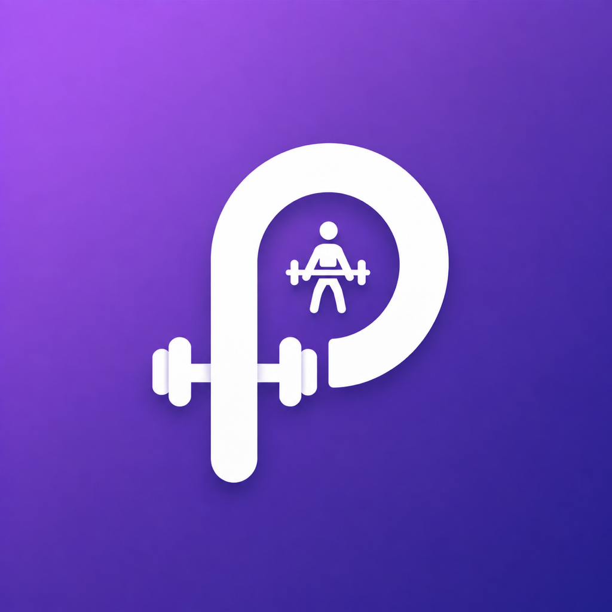

PravTrackerLast updated: September 18, 2026
These Terms of Service ("Terms") govern your use of the PravTracker iOS app ("the App"). By downloading or using the App, you agree to these Terms.
PravTracker is provided for your personal, non-commercial use to log meals, workouts, and body weight. You're granted a limited, non-exclusive, non-transferable license to use the App on your own Apple devices, subject to Apple's standard Licensed Application End User License Agreement.
Everything you enter into the App is stored locally on your device. You're responsible for the accuracy of the information you enter (e.g. nutrition or workout data) and for backing it up if you wish, since deleting the App deletes its data.
PravTracker is a personal logging tool. It does not provide medical, nutritional, or fitness advice, and nothing in the App should be treated as a substitute for professional medical guidance. Consult a qualified professional before making health decisions.
The App is provided "as is," without warranties of any kind, express or implied. We don't guarantee the App will be error-free, uninterrupted, or fit for any particular purpose.
To the maximum extent permitted by law, we are not liable for any indirect, incidental, or consequential damages arising from your use of the App.
We may update the App or these Terms from time to time. Continued use of the App after changes take effect means you accept the updated Terms. We'll update the "Last updated" date above when that happens.
You may stop using the App at any time by deleting it. We may discontinue or modify the App at our discretion.
Questions about these Terms? Email pravtracker@gmail.com.